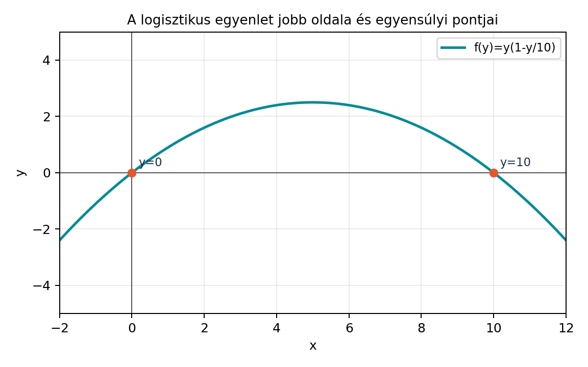

Az előző alfejezetekben megtanultuk, hogyan oldjunk meg elsőrendű
differenciálegyenleteket analitikusan: szétválaszthatókat, lineárisakat,
egzaktakat és helyettesítéssel visszavezethetőket. A gyakorlati
modellezésben azonban legalább ugyanilyen fontos, hogy a megoldás
viselkedését megértsük anélkül, hogy a teljes képletet
előállítanánk. Ha egy populáció, egy keverési folyamat vagy egy
elektromos kör hosszú távú állapota a kérdés, akkor a pontos megoldás
bonyolultsága gyakran felesleges: elegendő az egyensúlyi pontok és azok
stabilitásának vizsgálata. Ebben az alfejezetben három klasszikus
modellt – logisztikus növekedés, keverési tartály, RC-kör –
tanulmányozunk, és bevezetjük a fázisvonalat, az autonóm egyenletek
kvalitatív elemzésének alapvető eszközét.
36.3.2 Szemléletes kép: a
fázisvonal
Képzeljünk el egy populációt, amelynek egyedszáma
(ezer egyed). Ha a növekedési ráta
csak magától az
-tól
függ, akkor az
értékét egy számegyenesen ábrázolhatjuk, és minden pontban egy nyíl
mutatja, merre mozdulna a populáció, ha éppen ott lenne. Ahol a
„sebesség” nulla, ott a rendszer megáll: ez az egyensúlyi pont. Az
alábbi ábra a logisztikus modell
jobb oldalát mutatja az
függvényében; a függvény előjele dönti el, hogy a nyilak jobbra vagy
balra mutatnak.

A logisztikus egyenlet jobb oldala és
egyensúlyi pontjai - Az x tengely az y populációt, az y tengely az
f(y)=y(1-y/10) értéket mutatja. Az f(y)=0 megoldásai: y=0 és y=10. Ahol
f(y)>0, ott y növekszik; ahol f(y)<0, ott y csökken.
A grafikonról leolvasható:
és
egyensúlyi pontok. Ha
,
akkor
,
tehát a populáció nő; ha
,
akkor
,
tehát csökken. Ezért a nyilak a
intervallumon jobbra, a
fölött balra mutatnak:
stabil,
instabil egyensúlyi pont.
Ugyanez a kép a később tárgyalt halászati modellen
(,
tonna,
tonna/év kvóta) három panelen: a jobb oldal grafikonja, maga a
fázisvonal nyilakkal, és a megoldásgörbék. A felső sor kvóta nélküli
(),
az alsó
tonna/év esetet mutat; ekkor az egyensúlyok
(instabil) és
tonna (stabil). A
tonna/év kritikus kvótánál a két egyensúly összeolvad, efölött
eltűnik.
Statikus változat (mint a PDF-ben)
Fázisvonal és megoldások a halászati modellben,
és
tonna/év (RK4-gyel számított görbék)
36.3.3 Autonóm egyenletek,
egyensúlyi pontok és stabilitás
Definíció. Az elsőrendű differenciálegyenletet
autonómnak nevezzük, ha a jobb oldala csak a keresett
függvénytől függ, azaz
Az egyenlet autonóm, mert az idő nem szerepel expliciten: a változás
sebessége minden időpontban ugyanaz, ha az állapot ugyanaz.
Definíció. Az
pont egyensúlyi pont (vagy kritikus pont, stacionárius pont) az
egyenlethez, ha
Ha a megoldás valamikor eléri
-ot,
akkor örökre ott marad, hiszen
.
Az ilyen konstans megoldást stacionárius megoldásnak is
hívjuk.
Definíció. A fázisvonal az a valós
számegyenes, amelyen feltüntetjük az egyensúlyi pontokat, és az
egyensúlyi pontok közötti intervallumokon nyilakkal jelöljük a
megoldások irányát. Ha
az intervallumon, akkor
,
így
növekszik: jobbra mutató nyíl. Ha
,
akkor balra mutató nyíl.
Definíció. Legyen
az
egyensúlyi pontja.
Az
pont aszimptotikusan stabil (vonzó; a továbbiakban rövidebben
stabil), ha van olyan
,
hogy minden
kezdeti értékre a megoldásra
.
instabil (taszító), ha van olyan
,
hogy bármilyen közeli kezdeti értékhez van olyan megoldás, amely
valamikor
-nál
messzebb kerül
-tól.
félig stabil (semistable), ha az egyik oldalról vonz, a
másikról taszít (például
esetén
).
Ez az 1D-s fogalom nem azonos a fázissík nyeregpontjával.
A stabilitás eldöntésére a fázisvonal már önmagában elegendő, de van
egy gyors, analitikus kritérium is, amely a linearizáláson alapul.
Tétel (linearizált stabilitás). Legyen
folytonosan differenciálható az
egyenlet
egyensúlyi pontjának egy környezetében (így a kezdetiérték-feladatok
egyértelműen megoldhatók).
Ha
,
akkor
stabil egyensúlyi pont.
Ha
,
akkor
instabil egyensúlyi pont.
Ha
,
a linearizálás alapján nem dönthető el; az
lehet stabil, instabil vagy félig stabil.
Bizonyítási terv. Taylor-közelítéssel
-t
az
körül első rendig linearizáljuk. Mivel
,
a közelítő egyenlet
lesz, ahol
és
.
Ennek az egyenletnek a megoldása
.
Ha
,
akkor
,
tehát
;
ha
,
akkor
nő, tehát a megoldások távolodnak. A nulla deriváltú esetben a
másodrendű tagok döntenek, amelyeket a linearizálás elhanyagol.
Bizonyítás
(
eset). Mivel
,
a deriváltdefiníció szerint
,
ezért van olyan
,
hogy
esetén
.
Legyen
.
Itt
,
így a megoldás csökken, de az
konstans megoldást az unicitás miatt nem érheti el. Ezért monoton és
korlátos, határértéke
.
Ha
volna, akkor
állandó negatív felső korláttal, így
,
ellentmondás. Tehát
.
Az
eset ugyanígy, tükrözéssel adódik.
Bizonyítás
(
eset). Ugyanígy van
,
hogy
esetén
.
Ha
,
akkor addig, amíg
,
,
így
:
a megoldás exponenciálisan távolodik, és elhagyja a
-sugarú
környezetet. Az
eset hasonló. ∎
Továbbvitt eredmény. Ezt a fázisvonal-módszert és a
linearizált stabilitási kritériumot általánosítjuk két dimenzióra a Lineáris differenciálegyenlet-rendszerek és a
fázissík alfejezetben: ott az egyensúlyi pontok stabilitását a
rendszer Jacobi-mátrixának sajátértékei határozzák meg, és a fázisvonal
szerepét a fázissík (fázisportré) veszi át.
36.3.4 Logisztikus növekedés
A logisztikus egyenlet a legegyszerűbb modell, amely figyelembe veszi
a környezet eltartóképességét:
ahol
a belső növekedési ráta (intrinsic growth rate),
az eltartóképesség (carrying capacity). Az egyensúlyi pontokat az
egyenlet adja:
és
.
A stabilitás a deriválttal:
tehát
A fázisvonalon a nyilak:
esetén
(balra),
esetén
(jobbra),
esetén
(balra). Így minden pozitív kezdeti populáció
-hoz
tart.
A szétválasztható változójú módszerrel (lásd a Szétválasztható változójú egyenletek alfejezet) a
megoldás:
feltéve
és
.
A stacionárius megoldások
és
.
Példa. Egy halpopuláció
belső rátával nő, az eltartóképesség
hal. Kezdetben
hal van. Mennyi idő alatt éri el a populáció a
halat?
Behelyettesítve:
Átrendezve:
Ellenőrzés:
év alatt a
ráta mellett az
valóban; a képletbe visszahelyettesítve
adódik.
év reális egy lassan növekvő halpopulációnál.
36.3.5 Halászati kvóta és
bifurkáció
Most tegyük fel, hogy a populációból évente állandó
mennyiséget halásznak ki (kvóta). A modell:
Itt
a betakarítási ráta, mértékegysége egyedszám/év. Az egyensúlyi pontokra:
Átrendezve másodfokú egyenletet kapunk:
A diszkrimináns:
Ha
,
akkor
,
két egyensúlyi pont van:
Ha
,
akkor
,
egyetlen egyensúlyi pont:
.
Ha
,
akkor
,
nincs egyensúlyi pont, a populáció kihal.
A
értéket kritikus kvótának nevezzük. Ennél nagyobb kitermelés
esetén bármilyen kezdeti állományból a populáció nullára csökken. A
jelenséget bifurkációnak hívjuk: a
paraméter változtatásával az egyensúlyi pontok száma megváltozik. A
bifurkációelmélet részletes tárgyalása meghaladja e könyv kereteit; a
fogalmi hátteret a Továbblépés: merre tovább az
analízisben? alfejezet említi.
A stabilitás vizsgálatához deriváljuk a jobb oldalt:
A kisebbik gyök
esetén
,
tehát instabil; a nagyobbik gyök
esetén
,
tehát stabil. A fázisvonal tehát: ha a populáció a stabil egyensúlyi
pont fölött van, akkor ahhoz csökken; ha alatta, akkor nő – de csak
akkor, ha nem esik az instabil pont alá, mert akkor a kihalás felé
tart.
36.3.6 Keverési feladat
tartályban
Tekintsünk egy tartályt, amelyben
liter folyadék van, benne
kg só tökéletesen elkeverve. A tartályba
liter/másodperc sebességgel sóoldat áramlik, koncentrációja
kg/l. Ugyanakkor a tartályból
liter/másodperc sebességgel folyik ki a folyadék. Tökéletes keverést
feltételezve a kiáramló koncentráció
.
Ha
,
akkor a térfogat
állandó. A sómennyiség változása:
Ez egy lineáris, állandó együtthatójú autonóm egyenlet. Az egyensúlyi
pont:
amely éppen az a sómennyiség, amikor a ki- és beáramló koncentráció
megegyezik. A megoldás:
Az időállandó
:
ennyi idő alatt cseng le a kezdeti eltérés
-ed
részére.
Példa. Egy
literes tartályban kezdetben tiszta víz van. Beáramlik
l/s sebességgel
kg/l koncentrációjú sóoldat, és ugyanilyen sebességgel folyik ki a
keverék. Mennyi só van a tartályban
perc múlva?
Adatok:
l,
l/s,
kg/l,
.
Az egyensúlyi sómennyiség
kg. Az időállandó
s. A megoldás:
s behelyettesítve:
Ellenőrzés:
s nagy az időállandóhoz képest, ezért a rendszer közel van az
egyensúlyhoz;
kg reális. ∎
36.3.7 RC- és RL-kör
Egy egyszerű soros RC-körben egy
ellenállás, egy
kapacitású kondenzátor és egy
állandó feszültségű forrás van. Legyen
a kondenzátor feszültsége. A huroktörvény:
,
ahol
a kondenzátor árama. Így
amelyet átrendezve autonóm alakba írunk:
Az egyensúlyi pont
,
hiszen ekkor a kondenzátor teljesen feltöltődött, és az áram nulla. Az
időállandó
.
A megoldás
kezdeti feltétellel:
Ha
(üres kondenzátor), akkor
Egy soros RL-körre (ellenállás
,
tekercs
,
feszültségforrás
)
az áramra felírt egyenlet:
azaz
Az egyensúlyi áram
(a tekercs rövidzárként viselkedik egyenáramnál), az időállandó
.
Példa. Egy RC-körben
,
,
.
Mennyi idő alatt éri el a kondenzátor feszültsége a végső érték
-át?
Az időállandó
.
A feltétel:
tehát
Ellenőrzés: Az időállandó
s, a
-os
feltöltés kb.
időállandónyi idő; ez összhangban van az exponenciális lecsengés
szabályával. ∎
36.3.8 Paraméterbecslés két
mérésből
Gyakran a modell szerkezete ismert, de valamely paraméterét
mérésekből kell meghatározni. Ha a megoldás képlete rendelkezésre áll,
két mérés elegendő egyetlen ismeretlen paraméter becsléséhez.
Tekintsük az üres kondenzátor töltését:
,
ahol
ismert, de az időállandó
nem. Tegyük fel, hogy mértük:
ahol
és
.
Átrendezve:
Logaritmálva:
Kivonva az első egyenletet a másodikból:
Innen
Ez a két mérésből való becslés módszere. Több mérés esetén lineáris
regresszióval pontosítható, de ez már az Optimalizálás a gyakorlatban: legkisebb négyzetek és
gradiensmódszer témája.
Példa. Egy RC-körnél
.
Mérjük:
és
.
Becsüljük meg az időállandót!
Kiszámítjuk a hányadosokat:
A logaritmus
(ez a két mérés közti idő/időállandó arány). A becsült időállandó:
Ellenőrzés: Ha
s, akkor
,
és
;
a kiinduló adatokkal összhangban. ∎
Írjuk fel a modellt
autonóm alakban, és ellenőrizzük, hogy
csak
-tól
függ.
Keressük meg az
egyensúlyi pontokat.
Bontsuk intervallumokra a számegyenest az
egyensúlyi pontokkal, és határozzuk meg
előjelét minden intervallumon.
Rajzoljunk fázisvonalat: ahol
,
jobbra mutató nyíl; ahol
,
balra.
Döntsük el a stabilitást: ha mindkét oldalról a
pont felé mutatnak a nyilak, stabil; ha elfelé, instabil; ha az egyik
oldalról felé, a másikról el, félig stabil.
Ellenőrizzük a linearizált kritériummal:
stabil,
instabil. Ha
,
fázisvonallal vagy magasabb rendű tagokkal döntünk.
36.3.10 Valós életbeli alkalmazás:
fenntartható halászati kvóta
Egy halgazdaságban a populáció logisztikus növekedést mutat:
,
.
A kérdés: mekkora az a maximális éves kitermelés, amely mellett az
állomány nem hal ki, és mennyi a maximális fenntartható hozam?
A modell a halászati kvótával:
A kritikus kvóta:
Ha
tonna/év, akkor két egyensúlyi pont létezik, és a stabil egyensúlyi pont
adja a hosszú távon fenntartható állományméretet. Ha
tonna/év, az egyensúlyi pontok összeolvadnak
tonnánál; ez a maximális fenntartható hozam (maximum
sustainable yield, MSY). Ha
tonna/év, a populáció tetszőleges kezdeti állományból kihal, mert a
betakarítás meghaladja a populáció maximális növekedési ütemét.
Számítsuk ki az MSY-t:
Ekkor az egyensúlyi állomány
tonna, és a kifogott mennyiség éppen a populáció növekedési rátájával
egyenlő:
A modell azt mondja: ennél nagyobb kitermelés nem fenntartható. A
valóságban a logisztikus modell egyszerűsítése (nincs kor- és
térszerkezet, környezeti zaj, késleltetés), ezért a gyakorlatban a
kvótát általában a modell által adott érték alatt szokták meghatározni
biztonsági tartalékkal. Emellett a túlhalászás következtében a populáció
instabil egyensúlyi pont alá kerülhet, ahonnan már nem tér vissza – ez a
modell fontos figyelmeztetése.
36.3.11 Python-illusztráció: a
logisztikus egyenlet megoldása
Az alábbi rövid SymPy-kód megoldja a logisztikus egyenletet, és
kiírja az általános megoldást. A kód szemléltetés, nem bizonyítás; a
szimbolikus eredményt a fenti kézzel levezetett képlettel hasonlítjuk
össze.
import sympy as sp# Szimbolikus változókt, r, K, y0 = sp.symbols('t r K y0')y = sp.Function('y')# A logisztikus differenciálegyenletode = sp.Eq(y(t).diff(t), r * y(t) * (1- y(t)/K))# Megoldás y(0)=y0 kezdeti feltétellelsol = sp.dsolve(ode, y(t), ics={y(0): y0})print(sp.simplify(sol))
Kimenet (futtatva: Python 3.14.4, SymPy 1.14.0; más SymPy-verzióban
az alak eltérhet):
Eq(y(t), K*y0*exp(r*t)/(K + y0*exp(r*t) - y0))
Ez a képlet ekvivalens a levezetett
alakkal: a számlálót és a nevezőt
-vel
osztva éppen ezt kapjuk.
36.3.12 Tipikus hibák
Az egyensúlyi pontot
-ból
számolják. Az egyensúlyi feltétel
,
nem pedig a derivált nulla. A derivált előjele a stabilitást dönti el,
de a pont keresésekor mindig az eredeti egyenletet kell megoldani.
Fázisvonalon a nyilak irányát felcserélik. A
szabály:
esetén
,
tehát
növekszik, azaz jobbra mutató nyíl. Gyakori hiba, hogy a balra mutató
nyilat rajzolják, mert a függvény grafikonjának csökkenését nézik az
tengely irányában. A fázisvonalon mindig az
növekedésének irányát jelöljük.
A stabilitási kritériumot tévesen alkalmazzák:
esetén stabilnak gondolják, mert azt hiszik, hogy a növekedés
stabilitást jelent. Pedig ha
,
akkor a perturbáció exponenciálisan nő: az egyensúly instabil.
Keverési feladatnál elfelejtik, hogy a kiáramló koncentráció
.
Ha a térfogat változik,
,
és az egyenlet
alakú: továbbra is lineáris, de már nem autonóm és nem állandó
együtthatós, ezért a fázisvonal-módszer nem alkalmazható; az integráló
tényezős módszer viszont igen. A konstans térfogatú esetet csak akkor
szabad alkalmazni, ha
.
RC-körnél az időállandót reciprokként veszik. A
megoldásban
szerepel, ahol
;
ha valaki
-t
ír, az az időállandó reciprokát használja, ami hibás.
36.3.13 Önellenőrzés
Igaz-e, hogy az
egyenletnek két stabil egyensúlyi pontja van? Indokolj!
Rajzolja fel az
egyenlet fázisvonalát, és döntse el az egyensúlyi pontok
stabilitását!
Egy tartályban
liter,
l/s,
kg/l. Mi az egyensúlyi sómennyiség, és mennyi az időállandó?
Egy RC-körben
,
.
Mekkora az időállandó?
Adott
.
Hány egyensúlyi pont van, és melyik stabil?
36.3.13.1 Megoldások –
Önellenőrzés
Hamis. Az egyensúlyi pontok
és
.
Deriválás:
,
tehát
(stabil) és
(instabil). Csak
stabil.
Az egyensúlyi pontok
és
.
.
:
(balra);
:
(jobbra);
:
(balra). Így
instabil,
stabil.
1. feladat (A). Adott az
egyenlet. a) Határozza meg az egyensúlyi pontokat! b) Rajzolja fel a
fázisvonalat, és döntse el a stabilitást a fázisvonal alapján! c)
Ellenőrizze a linearizált stabilitási kritériummal!
2. feladat (A). Egy populáció logisztikus növekedést
mutat
és
paraméterekkel. Írja fel a megoldást
kezdeti feltétellel, és határozza meg, mennyi idő alatt éri el a
populáció az
-at!
3. feladat (B). Egy
literes tartályban kezdetben
kg sót tartalmazó oldat van. Tiszta víz áramlik be
l/s sebességgel, és ugyanilyen sebességgel folyik ki a keverék. Mennyi
idő alatt csökken a sómennyiség
kg alá?
4. feladat (B). Egy RC-körben
,
,
,
a kondenzátor kezdetben töltetlen. Írja fel a feszültség időfüggését, és
határozza meg azt az időpontot, amikor a feszültség eléri a
-ot!
5. feladat (C). Bizonyítsa be, hogy a logisztikus
egyenlet
megoldása valóban kielégíti az
egyenletet! (Útmutatás: deriváljon, majd fejezze ki
-t
segítségével.)
6. feladat (D). Egy halpopulációra
és
tonna. A halászati kvóta
tonna/év. a) Számítsa ki a kritikus kvótát, és döntse el, van-e
egyensúlyi pont! b) Ha van egyensúlyi pont, határozza meg a stabil és
instabil egyensúlyi állományt! c) Mit jelent ez a fenntarthatóság
szempontjából? (Ez a feladat készíti elő a későbbi numerikus
módszerekhez szükséges modellparamétereket.)
36.3.15 Megoldások
1. feladat. a)
.
Az egyensúlyi pontok:
és
.
b) Intervallumok:
:
(balra);
:
(jobbra);
:
(balra). Fázisvonal: nyilak balra, jobbra, balra. Így
instabil,
stabil. c)
.
→ instabil;
→ stabil. Egyezik a fázisvonallal.
2. feladat. A megoldás:
Az
eléréséhez:
Ellenőrzés:
,
a képletbe visszahelyettesítve
.
3. feladat. Most
(tiszta víz),
l,
l/s,
kg. A differenciálegyenlet:
A megoldás:
Keressük, hogy mikor lesz
:
Ellenőrzés:
perc = 288 s,
,
tehát
kg.
perc múlva lesz
kg alatt.
4. feladat. Adatok:
,
,
.
Az időállandó
.
A feszültség:
A
eléréséhez:
Ellenőrzés:
,
a képlet visszaadja a
V-ot.
5. feladat. Legyen
a megadott képlet. Deriváljuk:
A láncszabállyal:
Egyszerűsítve:
Most fejezzük ki az
kifejezést. Legyen
,
így
.
Ekkor
Mivel
,
ez éppen
ami megegyezik a
fenti kifejezésével. Tehát a képlet valóban megoldás. ∎
6. feladat. a) A kritikus kvóta
tonna/év. Mivel
,
van egyensúlyi pont (kettő). b) Az egyensúlyi pontok:
Számoljuk a gyököt:
Így
A stabilitás:
.
,
tehát
instabil.
,
tehát
stabil. c) A
tonna/év kitermelés még fenntartható, de csak akkor, ha a populáció a
tonnás instabil küszöb fölött marad. Ha a halászat vagy környezeti hatás
miatt
tonna alá esik, a populáció kihal. Ezért a gyakorlatban a kvótát a
kritikus értéknél alacsonyabban, biztonsági tartalékkal szokták
meghatározni.
36.3.16 Rövid összefoglaló
Az autonóm elsőrendű egyenlet
alakú; az
pontokat egyensúlyi pontoknak nevezzük. A fázisvonalon az
előjele határozza meg a nyilak irányát:
esetén
növekszik,
esetén csökken. Egy egyensúlyi pont stabil, ha a környező nyilak mindkét
oldalról felé mutatnak, instabil, ha elfelé; félig stabil, ha az egyik
oldalról felé, a másikról el. A linearizált stabilitási kritérium
szerint ha
,
akkor
stabil, ha
,
akkor instabil;
esetén további vizsgálat szükséges. A logisztikus modell
egyensúlyi pontjai
(instabil) és
(stabil); megoldása
.
A halászati kvóta
bevezetésével az egyensúlyi pontok száma a
kritikus értéknél megváltozik (bifurkáció):
esetén nincs fenntartható állomány. A keverési tartály konstans
térfogatú esetében
,
az időállandó
.
Az RC-kör feszültsége
,
időállandója
.
Két mérésből paraméter becsülhető a megoldás képletének
linearizálásával.
A fejezet kiindulópontjai (Jirka, MIT OCW 18.03SC, SciPy
dokumentáció) általános tananyag-referenciák, de az itt szereplő
levezetések és példák a klasszikus kalkulus és
differenciálegyenlet-anyag standard eredményei. A konkrét számadatok
szemléltető, kerekített modellértékek; valós mérési adatot nem
állítottunk. A Python-kód a SymPy könyvtár szokásos dsolve
függvényét használja; a kimenet formátuma a SymPy verziójától függhet,
ezért ellenőrzés igényel.